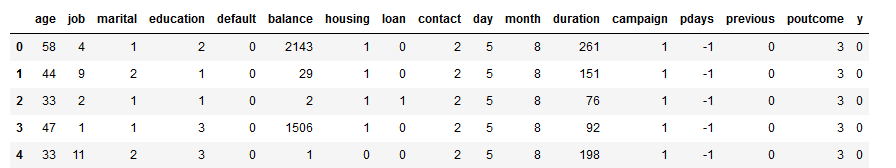
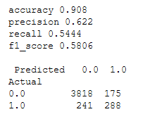
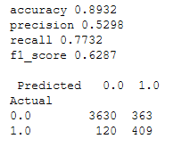

XGBoost¶
XGBoost or Extreme Gradient Boosting is a decision tree ensemble method just like random forests. However, the construction of the forest is substaintially different. XGBoost is an additive model: an initial tree is trained then a second tree is trained to predict the errors of the initial tree, a third tree is then trained to predict the errors of the second tree and so on and so forth. The results of the trees are added together to make the final prediction. Whereas random forests take a majority vote of the forest, with each tree being trained on a sample of the input data.
For all things XGBoost, the XGBoost documentation has a comprehensive guide, from installation to utilisation and even a forum. However, for understanding the mathematics behind the model I actually found the explanation in this paper the most useful. It’s both concise, detailed and easy to follow if you are already familiar with decision tree ensemble methods (just skip to part 3).
This post presents and applies XGBoost on a dataset with the goal of predicting customer term deposit subscription. The data originally comes from a 2014 university paper predicting the success of telemarketing campaigns for a Portuguese bank. In the paper, the models tested are decision trees, logistic regression, support vector machines and neural networks. However, the datasets available don’t include all of the variables used and more specifically we do not have gender, which is one of the variables retained for their final model. The data set I used comes from The UCI Machine Learning Repository. I used the “bank-full” dataset. For the coding, I’ve used Python 3 in a Jupyter notebook.
There are about 45K rows of data and 16 variables. As well as having information on the clients such age, job, education and marital status there is also information on telephone marketing campaigns carried out and if they have a personal loan. There aren’t any null values in the data, but some variables include the modality “unknown”. For example, 0.6% have an unknown job, 4% have an unknown education level and 29% have an unknown communication type (otherwise cellular or telephone). Finally, in 82% of the cases, the outcome is unknown for the previous marketing campaign and only 3% were a “success”. I chose to keep the modality “unknown” instead of replacing it which could have biased the model. I also considered dropping the features with 29% and 82% unknown values but keeping them improved the result. The variable “age” is left-skewed, having a median of 39 for a range of 18-95. This was confirmed using scipy.stats.skew (skewness 0.68) and scipy.stats.skewtest (p-value of 0 for the null hypothesis that the data comes from a normal distribution). There is however no need to regularise the data for XGBoost.
For the modelling, we first import the libraries and define a print_metrics function. Given I have an imbalanced data set, with only ~10% uptake of term deposits by the customers, I don’t pay much attention to the accuracy metric.
#Import libraries and functions
import pandas as pd
import numpy as np
from sklearn.preprocessing import LabelEncoder, OneHotEncoder
from sklearn.model_selection import train_test_split,GridSearchCV
from sklearn.ensemble import RandomForestClassifier
import xgboost as xgb
from sklearn import metrics
#Define a metrics function
def print_metrics(y, pred):
print( 'accuracy', round(metrics.accuracy_score(y, pred),4))
print('precision', round(metrics.precision_score(y, pred),4))
print('recall', round(metrics.recall_score(y, pred),4))
print('f1_score', round(metrics.f1_score(y, pred),4))
print('\n', pd.crosstab(pd.Series(y, name='Actual'),
pd.Series(pred, name='Predicted')))
Once the data is imported, the categorical features needs to be transformed into numerical data. The binary categorical features are straight binarized but if there are 3 or more categories then the features are transformed in a 2-step process.
#Load the data and replace the y target with zeros and ones
df = pd.read_csv('bank-full.csv', delimiter=";")
#Encode binary variables
df.y=df.y.replace(['no','yes'], [0,1], regex=True)
df.default=df.default.replace(['no','yes'], [0,1], regex=True)
df.loan=df.loan.replace(['no','yes'], [0,1], regex=True)
df.housing=df.housing.replace(['no','yes'], [0,1], regex=True)
Then process the rest of the categorical features first using LabelEncoder to change from categories to numeric data.
#Identify the column types and so those to be recoded
cols=df.dtypes
cats=cols[cols=="object"].index #columns containing categorical data
num=cols[cols!="object"].index #columns containing numerical data
#Transform categorical data to numeric data
for cat in cats:
le = LabelEncoder()
df[cat] = le.fit_transform(df[cat].astype(str))
df.head()
With categorical features transformed:
{kind=link}
Then use one hot encoding to binarize the categorical data and combine this array with the already numerical data.
#Binarize the data using OneHotEncoder
ohe = OneHotEncoder(sparse=False)
cat_transformed = ohe.fit_transform(df.loc[:,cats])
#Create the dataframe "data" from the numerical and transformed categorical data
data=np.hstack((cat_transformed,df[num]))
Finally carry out sampling to create the test and training datasets. Due to the quantity of data, I chose to put 90% of it in the training dataset.
#Split into test and train
r=0.9
X_train, X_test, y_train, y_test = train_test_split(data[:,:-1], data[:,data.shape[1]-1]\
, train_size=r, test_size=(1-r)\
, stratify=data[:,data.shape[1]-1] )
Before modelling in XGBoost, I ran a random forest algorithm to have a comparison point with another decision tree ensemble method. I set the number of trees to 100 which is the default value for XGBoost. I didn’t attempt to tune this model nor compensate for the imbalanced classes.
#Random Forest comparison example
clf = RandomForestClassifier(n_estimators=100, random_state=0)
clf.fit(X_train, y_train)
#Evaluate model
print_metrics(y_test,clf.predict(X_test))
The confusion matrix for the test data set, remembering that 1 = “took up a term deposit”:
{kind=link}
Now looking at XGBoost, there are quite a few variables that we can tune on. There is even a parameter, scale pos weight, which adjusts for imbalanced datasets. The documentation suggests sum(negative instances) / sum(positive instances), which is what I used. I had found that I had better results by creating duplicates in the training data, but didn’t want to pass duplicates into the grid search alogrithm which uses cross-validation.
In hand tuning a few models, I found that the model preformed really well on the training dataset but less well on the test dataset. To handle this overfitting, the [tuning recommendations] (https://xgboost.readthedocs.io/en/latest/tutorials/param_tuning.html) suggest adjusting the max depth, min child weight and gamma parameters. Gamma is the minimum loss reduction required to make a further partition on a leaf node of the tree. I also found that if I was willing to sacrifice a little precision then I could increase my recall by setting the number of estimators to 25 for example whereas the default value was 100. In this case it depends on your business case if you prefer to maximise recall or precision. Tuning the model using GridSearchCV:
#Calculate the scale_pos_weight parameter
w=round(y_train.shape[0]/sum(y_train),2)
#Create parameters to search
params = { 'min_child_weight':[5,10,15,20],
'max_depth' : [5,10,15],
'gamma':[5,10,15,20,25,30]}
xgb_model = xgb.XGBClassifier(
objective= 'binary:logistic',
nthread=4,
eval_metric="auc",
scale_pos_weight = w)
#Carry out the gridsearch
grid = GridSearchCV(xgb_model, params, n_jobs=2)
grid.fit(X_train, y_train)
#Print the best chosen params
print("Best parameters :",grid.best_params_)
{kind=link}
Finally test the model on the test dataset.
#Set the parameters
params = { 'objective':'binary:logistic',
'nthread':4,
'eval_metric' : "auc",
'scale_pos_weight' : w}
params.update(grid.best_params_)
#Train the model
xgb_model = xgb.XGBClassifier(**params)
#Fit the model on tuned parameters
xgb_model.fit(X_train, y_train)
#Evaluate on the test dataset
print_metrics(y_test,xgb_model.predict(X_test))
The confusion matrix for the test data set ( 1 = “took up a term deposit”):
{kind=link}
This XGBoost model compares favourably with the random forest results if we are looking to maximise recall which has improved from 54% to 77%. However, the precision has taken a hit going from 64% to 53%. This model would still be useful to the bank as they would be able to ensure that approximately three-quarters of potential customers were targeted in the marketing campaign while targeting ~80% fewer customers.
I would have liked to have trained on a larger parameter grid to see if these results could have been improved and to try tuning other parameters, such as the number of estimators. However, I was put off by the time it would take to search a really dense grid. Using RandomizedSearchCV would speed things up but obviously it could easily miss some good parameter combinations. This got me side-tracked onto my next project… a custom tuning algorithm.